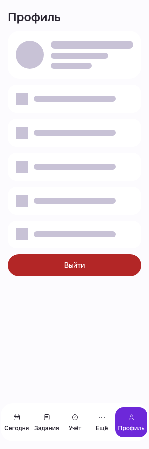
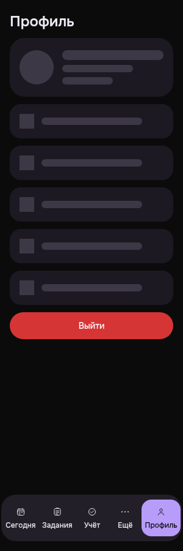
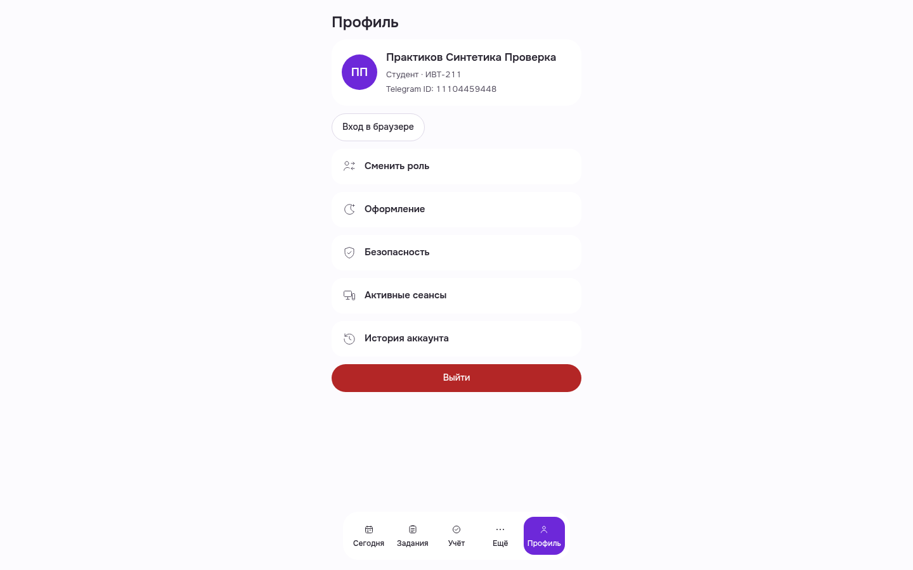

Profile loading: selected shared skeleton states
Sourcecab3/a851, productc35. PWA300light andcontrolledTMA300dark actualloadingPNG personallyviewed/hashmatch. Only own-profileGET washeld inbrowser; releasedunchanged200/loadedafter. Avatar/lines/actionplaceholders, title/logout/nav visible, nohorizontalclip. No barevisiblecaption.
OriginalPWA run remainsrawFAIL/UNKNOWN because harnesswrongly requiredBearer forcookie-onlylogout. Exactoldsession andonehelper session now separatelyrevoked, RootindependentSQLpost95d933PASS, known92079terminalexit2/0liveownedprocesses. NoPWArecapture. RemainingTMAoneAuth200/nativeexact204+guest401/browserclosed. SDKhost/HMAC synthetic, nativeTelegramproviderunknown.
Thirdimage ishistorical1440loadedcontrol reusedfrom888; notanewruntimePASS. No allstates/fullapp/readinesspercentage claim.
Qualification/cleanup/limits · Manifest/hash · ImmutableoriginalFAIL
PWA · Профиль · loading skeleton · light · 300
PWA-MOBILE-PROFILE__postfix-held-read-loading__light__300__root16__cab3eed18
Синтетически удержан только реальный own-profile GET; после кадра unchangedGET200/loaded. Первый rawrun остаётсяFAIL из-заTESTcookiegate; exactsessioncleanup отдельно доказан helper+RootPGpost/terminalclose.

Controlled TMA · Профиль · loading skeleton · dark · 300
TMA-MOBILE-PROFILE__postfix-held-read-loading__dark__300__root16__cab3eed18
Новый одинкадр: realAuth/data +syntheticSDKhost/testHMAC/darksystem; own-profileGET held→release200/loaded→exactbearer native204/401. NativeTelegramproviderunknown.

Loaded control REUSE888 · Controlled TMA · Профиль · light · 1440
TMA-CONTROLLED-SIGNED-MOBILE-PROFILE__actual-baseline__light__1440__888667e32
Исторический actualloadedoverview, повторноне снимался. Loadedbranch/semanticstyles/initialprofiletransport qualification вsource receipts; не новый1440runtimePASS.
